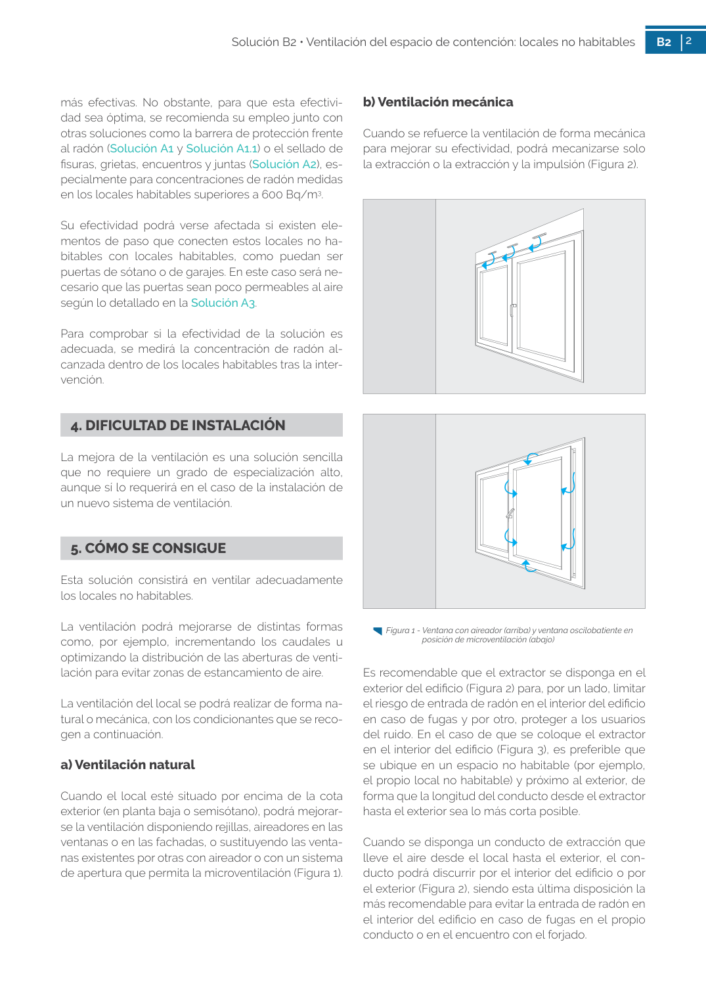
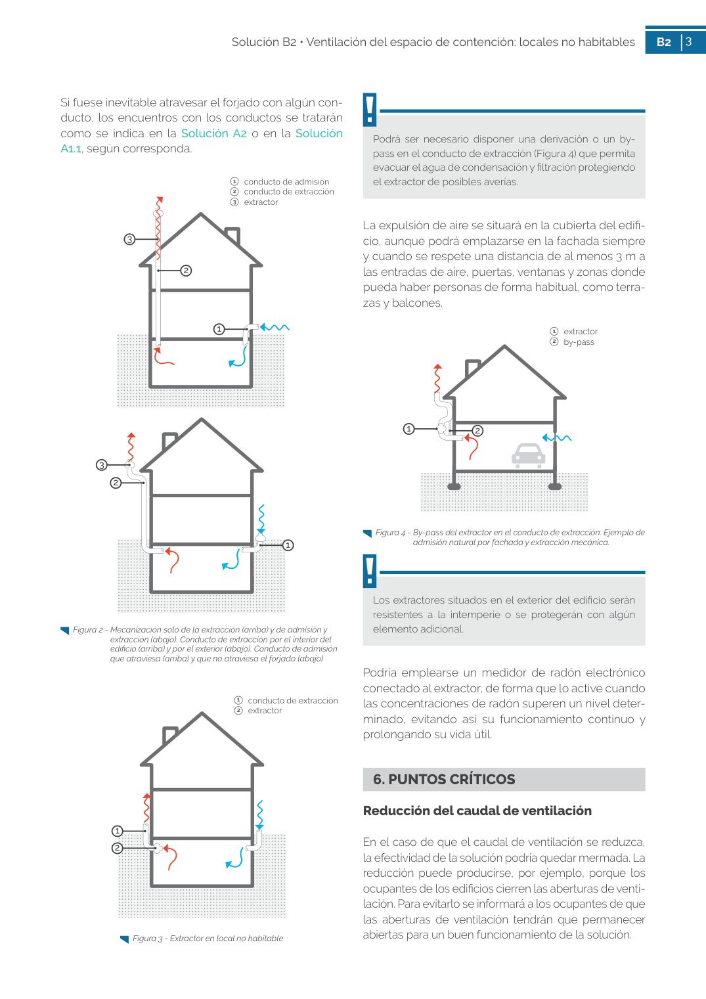

<!doctype html>
<html lang="es"><head><meta charset="utf-8">
<meta name="viewport" content="width=device-width, initial-scale=1">
<title>GUIA · a) Ventilación natural</title><link rel="stylesheet" href="../estilo.css">
</head><body>
<nav><a href="../index.html">Índice</a> › <a href="../doc/guia-pdf-f3314b0414fe-sin-fecha-e58e54b822cf.html">GUIA</a> › a0170</nav>

<header class="meta">
<p><a href="../doc/guia-pdf-f3314b0414fe-sin-fecha-e58e54b822cf.html">GUIA</a> · a) Ventilación natural · versión sin-fecha · capa guia</p>
</header>
<div class="cita"><strong>Cita:</strong> GUIA · ID técnico a0170 · a) Ventilación natural · páginas físicas pág. 49-50 (impresas: ['49', '50'])</div>
<p>Formatos: <a href="../../contenido/docs/GUIA-PDF-f3314b0414fe/sin-fecha__e58e54b822cf/apartado/a0170__a-ventilacion-natural.json">JSON compacto</a> · <a href="../../contenido/docs/GUIA-PDF-f3314b0414fe/sin-fecha__e58e54b822cf/apartado/a0170__a-ventilacion-natural.md">Markdown</a> · <a href="../../contenido/docs/GUIA-PDF-f3314b0414fe/sin-fecha__e58e54b822cf/fuente.pdf">PDF fuente</a></p>
<p><a href="../doc/guia-pdf-f3314b0414fe-sin-fecha-e58e54b822cf.html">Ámbito del documento</a> · <a href="../doc/guia-pdf-f3314b0414fe-sin-fecha-e58e54b822cf.html#ambito">texto del ámbito</a> ·
<a href="../doc/guia-pdf-f3314b0414fe-sin-fecha-e58e54b822cf.html">documento y tablas</a></p>
<nav><a href="guia-pdf-f3314b0414fe-sin-fecha-e58e54b822cf__a0169.html">← 5. CÓMO SE CONSIGUE</a> <a href="guia-pdf-f3314b0414fe-sin-fecha-e58e54b822cf__a0171.html">1   conducto de admisión 2  conducto de extracción →</a></nav>
<h1>a) Ventilación natural</h1>
<p>Tipo: tablas, figuras · nivel 3 · sección estimada: 5. CÓMO SE CONSIGUE · padre: a0169</p>
<pre class="literal">a) Ventilación natural
Cuando el local esté situado por encima de la cota
exterior (en planta baja o semisótano), podrá mejorar­
se la ventilación disponiendo rejillas, aireadores en las
ventanas o en las fachadas, o sustituyendo las venta­
nas existentes por otras con aireador o con un sistema
de apertura que permita la microventilación (Figura 1).

3
Solución B2 • Ventilación del espacio de contención: locales no habitables
B2
3
Si fuese inevitable atravesar el forjado con algún con­
ducto, los encuentros con los conductos se tratarán
como se indica en la Solución A2 o en la Solución
A1.1, según corresponda.
Figura 2 - Mecanización solo de la extracción (arriba) y de admisión y
extracción (abajo). Conducto de extracción por el interior del
edificio (arriba) y por el exterior (abajo). Conducto de admisión
que atraviesa (arriba) y que no atraviesa el forjado (abajo)
1
3
2</pre>
<h2>Tablas en estas páginas</h2><ul><li>p. 49 · <a href="../../contenido/docs/GUIA-PDF-f3314b0414fe/sin-fecha__e58e54b822cf/tabla/p0049_t01.json">p0049_t01.json</a> · <a href="../../contenido/docs/GUIA-PDF-f3314b0414fe/sin-fecha__e58e54b822cf/tabla/p0049_t01.csv">.csv</a></li><li>p. 50 · <a href="../../contenido/docs/GUIA-PDF-f3314b0414fe/sin-fecha__e58e54b822cf/tabla/p0050_t01.json">p0050_t01.json</a> · <a href="../../contenido/docs/GUIA-PDF-f3314b0414fe/sin-fecha__e58e54b822cf/tabla/p0050_t01.csv">.csv</a></li></ul><h2>Página visual</h2><figure><a href="../../contenido/docs/GUIA-PDF-f3314b0414fe/sin-fecha__e58e54b822cf/figura/p0049.png"></a><figcaption>Página visual 49 (fuente para fórmulas/tablas/figuras)</figcaption></figure><figure><a href="../../contenido/docs/GUIA-PDF-f3314b0414fe/sin-fecha__e58e54b822cf/figura/p0050.png"></a><figcaption>Página visual 50 (fuente para fórmulas/tablas/figuras)</figcaption></figure><p class="aviso">PDF fuente redistribuible: copia fiel enlazada en esta página (SHA256 verificado).</p>
<footer>Generado estáticamente desde JSON normalizado; sin JavaScript ni servicios externos.
El JSON es la fuente; este HTML es caché reproducible.</footer>
</body></html>
